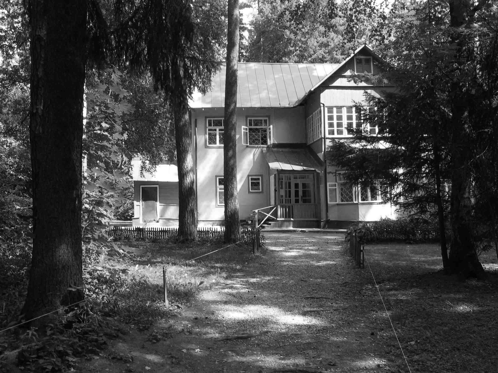
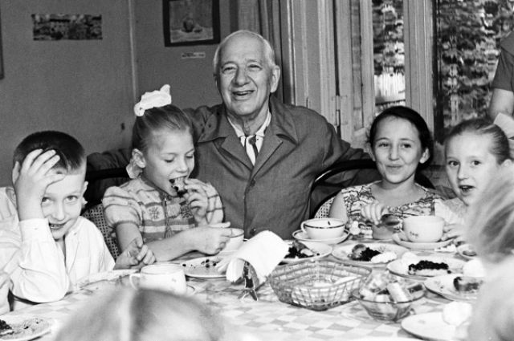
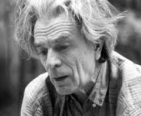

Экскурсии
ЖИЗНЬ И ТВОРЧЕСТВО КОРНЕЯ ЧУКОВСКОГО
2 – 2,5 часа
группа 6 – 15 человек
400 ₽ с человека
Интерактивное путешествие по дому, соединяющее просветительский посыл с элементами драматургии. Экскурсия рассчитана на семейные группы посетителей. От комнат верхнего этажа, наполненных приметами жизни Куоккалы и Переделкина, посетители спускаются в столовую, оформленную родными Чуковского в 1960-е годы. Посещение завершается в «выставочной» комнате первого этажа, где новые издания книг Чуковского закрепляют его любимую мысль о себе самом: «Я — писатель-многостаночник»
ЧУКОВСКИЙ И ДЕТИ
2 – 2,5 часа
группа 6 – 15 человек
400 ₽ с человека
Экскурсия может начинаться рядом с домом-музеем Чуковского — предварительным походом посетителей вместе с экскурсоводом на костровую площадку и «поляну Бибигона». Это живой рассказ как о детских и взрослых годах внуков и детей самого Корнея Ивановича, так и о знаменитых занятиях Чуковского детской психологией и многолетней работой над книгой «От двух до пяти».
Детские праздники в музее Чуковского: «Здравствуй, лето!» и «Прощай, лето!». Знаменитые «костры Корнея Чуковского» — это старая традиция, заложенная в середине прошлого века хозяином дома. На ежегодных представлениях в Переделкине собираются знаменитые и начинающие детские поэты, самодеятельные и профессиональные артисты, музыканты. Главные участники праздничных «костров», проходящих в глубине участка — дети, которые живо общаются с литераторами, слушают любимые и новые стихи, поют и танцуют, участвуют в конкурсах и викторинах.
Здание и экспозиция
 Интерьер дома-музея Чуковского сохранен таким, каким он был в последние годы жизни писателя. Фотографии, графика, живопись, собрание книг напоминают о связях Корнея Чуковского с крупнейшими представителями русской культуры первой четверти ХХ века — Ильей Репиным, Александром Блоком, Владимиром Маяковским, Леонидом Андреевым, Борисом Григорьевым, Александром Солженицыным.
 В музее сохраняется рабочий стол Солженицына и экспонаты, напоминающие о его творчестве. Сохранена и комната Лидии Чуковской, в которой она жила и работала в 1970-е годы. Значительную часть экспозиции занимает рабочая библиотека Чуковского, насчитывающая около 4,5 тысяч книг, из них более тысячи — на иностранных языках (в основном, на английском). Экспонаты музея представляют разные линии человеческой и литературной судьбы Корнея Чуковского: мантия Доктора литературы Оксфорда, подарки детей и взрослых не только из России, но и из Англии, Японии и Америки.
У нас работают
СЕРГЕЙ ВАСИЛЬЕВИЧ АГАПОВ
заведующий отделом с 2004 года. Сотрудник Государственного Литературного музея с 1996 года. Работал в переделкинском мемориальном музее с 1978 года, задолго до обретения домом Чуковского официального статуса. Участвовал в «народной стройке» по восстановлению и укреплению дома — в начале 1980-х годов, стоял у истоков общественной борьбы в защиту опального музея, на протяжении многих лет был учеником и помощником Лидии Корнеевны Чуковской.
ПАВЕЛ МИХАЙЛОВИЧ КРЮКОВ
научный сотрудник отдела, в Государственном Литературном музее с 1996 года. До обретения домом-музеем официального статуса несколько лет проработал в нем экскурсоводом. Занимается исследованием творчества и биографии К. И. Чуковского, участвовал в подготовке 15-томного собрания сочинений, в выставках и вечерах, посвященных К. И. и Л. К. Чуковским. Автор многих публикаций.

НАТАЛЬЯ ВАСИЛЬЕВНА ПРОДОЛЬНОВА
научный сотрудник отдела. С конца 1990-х годов добровольно помогала дому-музею Чуковского в проведении выставок и экскурсий. В Государственном Литературном музее с 2002 года. Имеет опыт методической и музейной работы. Параллельно ГЛМ трудится в системе дополнительного образования, изучает детское творчество, активно занимается с детьми. Магистр педагогических наук.
ВЛАДИМИР ЭДУАРДОВИЧ СПЕКТОР
научный сотрудник отдела, в Государственном Литературном музее с 2005 года. Многолетний ведущий видеохроники творческой жизни дома-музея К. И. Чуковского, создатель архива литературных вечеров. Периодически выступает на встречах в московских библиотеках и школах, участвует в работе жюри конкурсов детского творчества, публикуется в специализированных детских журналах.
Выдающиеся сотрудники разных лет
Лев Алексеевич Шилов (1932 — 2004), звукоархивист, искусствовед, литературовед, лектор, музейный работник. С 1996 и до своей кончины Лев Алексеевич Шилов возглавлял филиал (ныне — отдел) ГЛМ «Дом-музей Корнея Чуковского в Переделкине».
 Окончив филологический ф-т МГУ (1954), работал в Музее Маяковского, принимал участие в подготовке собраний сочинений Маяковского и Есенина, организовывал выставки и литературные вечера, которые записывал на магнитофонную пленку, положив начало своей будущей работе звукоархивиста. С 1963 работал во Всесоюзном бюро пропаганды художественной литературы Союза писателей СССР; тогда же, при поддержке Бориса Слуцкого, начал создавать фонотеку СП СССР.
С 1964 Лев Шилов начал работу с восковыми фоноваликами из коллекции филолога и лингвиста С. И. Бернштейна (звуковое собрание петроградского Института Живого слова), перезаписывая на магнитофонную ленту фонограммы, сделанные в 1920-е гг. в Москве и Петрограде (голоса Андрея Белого, Александра Блока, Валерия Брюсова, Максимилиана Волошина, Осипа Мандельштама и других). Именно Льву Шилову история отечественной литературы обязана сохранением и восстановлением авторского чтения Блока, Гумилева и многих других поэтов и прозаиков Серебряного века. Работая в отечественных и зарубежных архивах, Шилов разыскал неизвестные аудиозаписи Ивана Бунина, Михаила Зощенко, Бориса Пастернака и других писателей.
В 1975 Шилов возглавил Отдел звукозаписи Государственного литературного музея; благодаря его деятельности музейная звуковая коллекция стала одной из самых полных в России. В 1980 году открыл первую в мире выставку литературных звукозаписей («Звучащая литература»). В течение многих лет, используя свой уникальный талант лектора-просветителя, Шилов прочитал десятки лекций с использованием аудиоархивов; записал циклы теле- и радиопрограмм, посвященные творчеству Льва Толстого, Блока, Маяковского, Михаила Булгакова и многих других.
В последние годы жизни Шилов выпустил серию малотиражных аудиокассет и компакт-дисков с записями авторского чтения, в том числе «Голоса, зазвучавшие вновь», «Говорит Лев Толстой», «Осип Мандельштам. Звучащий альманах», «Борис Пастернак. Полное собрание звукозаписей», «Иосиф Бродский. Ранние стихотворения», «Корней Чуковский. Звучащее собрание сочинений».
Соч.: Голоса, зазвучавшие вновь: Записки звукоархивиста. 2-е, доп. изд. М., 1987; Я слышал по радио голос Толстого: Очерки звучащей литературы. М., 1989; Анна Ахматова. М., 1989. Корней Чуковский на эстраде и на трибуне // Мастера красноречия: Сб. М., 1991; Звучащие тексты Анны Ахматовой: Сб. «Царственное слово» // Ахматовские чтения: Вып. 1. М., 1992; Пастернаковское Переделкино. М., 2003. Голоса, зазвучавшие вновь: Записки звукоархивиста-шестидесятника. М., 2004.